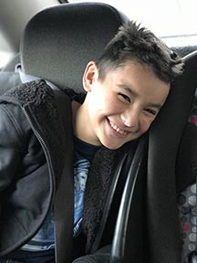
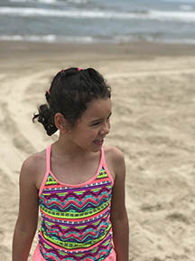
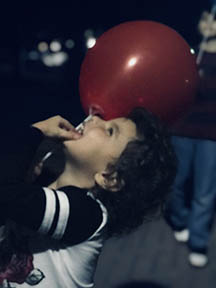
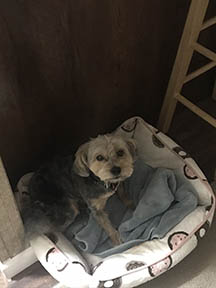
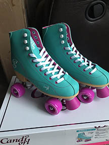
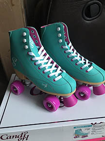

About Me...
My name is Sarah Armstrong and well this is me. Ok, not everyday me of course but still me. I work as the lead in the Deli department at the HEB in Schertz. I've been with the company for 13 years now, at the same store to be exact, in various departments. I've been the lead for the Deli a little over two years now and the job has had it's ups and downs and in that roller coaster of a ride I have come to discover that managing people is NOT for me. So (with the love and support of my best friend), I have decided to pursue a career in web design with the hopes of transitioning into the new digital facility that HEB is currently building. Am I doing all this because I find babysitting a bunch of adults repulsive? No! I'm also doing this because there are three little people that call me mom and they are the ones that keep me moving, keep me motivated, and they keep me ALIVE!
  
My Other Children...
Meet Coco and Wednesday after Wednesday Addams in case you didn't catch that. Coco has been apart of my family for 6 years. I aquired her when she was only 6 weeks old, my cousin couldn't take care of her anymore and asked me take care of her till he could find a home for her. So, naturally I fell in love and well I've had her ever since. She is a loyal and very loving dog. She has always loved my children as well even when they were smaller and "played" with Coco in a not so playful manner...oh poor Coco Bean. She has been the only fur baby in the house till I adopted Wednesday last Feburary. I woke up one day (pretty much) and decided I was no longer "anti-cat" and despite the allergie I discovred I had I wanted to get one...a black on to be exact and so I did and here she is the most loveable cat I have ever met. We bonded instantly and she has been a joy to have (minus the kitty box of course) haha.


Hobbies...
Hobbies you say? My former self knows and loves hobbies she had alllll the time in the word to devote herself to hobbies but now...*sigh* she longs for some time to be a hobbiest again. So, hobbies I say...what's a hobby? On top of my fourty hour work week I'm also a full time student and finding time to just "be" has it's challenges so when I can muster enough time to do something constructive other then housework and homework (which is close to.. NEVER) I love to:
- Bake
- Decorate Cakes
- Roller Skate
- Paint/Draw
- Sleep
yes... I consider sleeping a hobby and now as an adult it's a cherished childhood memory!
 


So there you have it a little bit more knowledge about the girl behind the profile pic. She's a mom, a devoted employee, and a hobbiest (when she's not sleeping). Also, I'd like to say thank you for caring enough to scroll allll the way down to the end haha. Ta da you made it...the end...adios...oh, and if you happend to like what you read and would like to know more about me and my life hop on my blog page from time to time it's new too so you'll see a work in progress there also. I'll drop the link and hope to see you soon!
For suggestions on how I can improve my blog/webpage please email me at: sarmstrong1122@gmail.com.